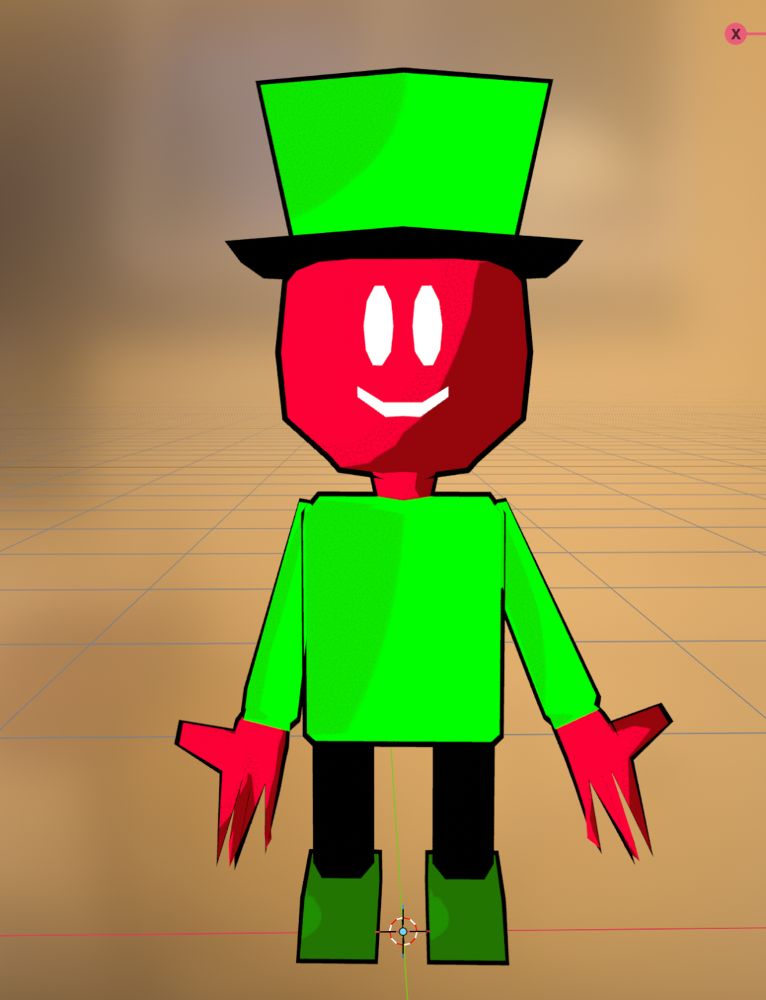
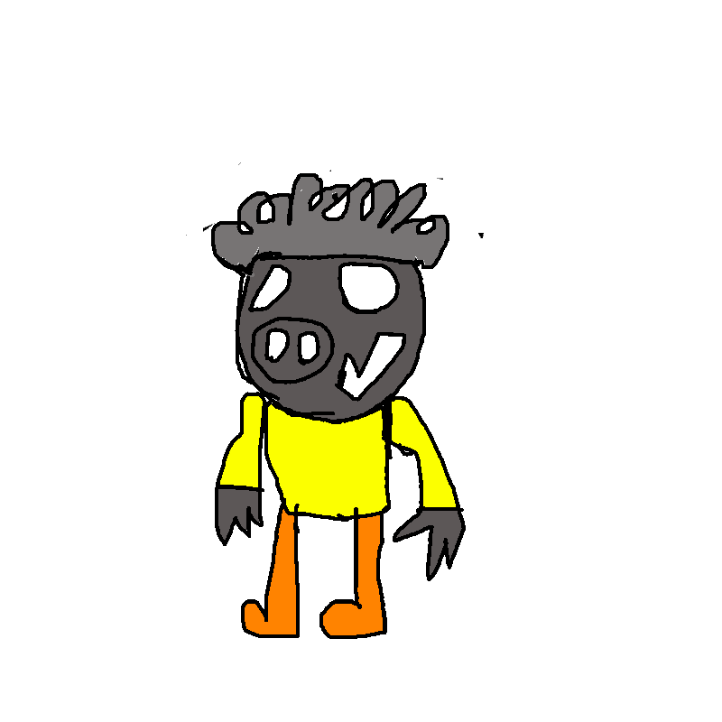
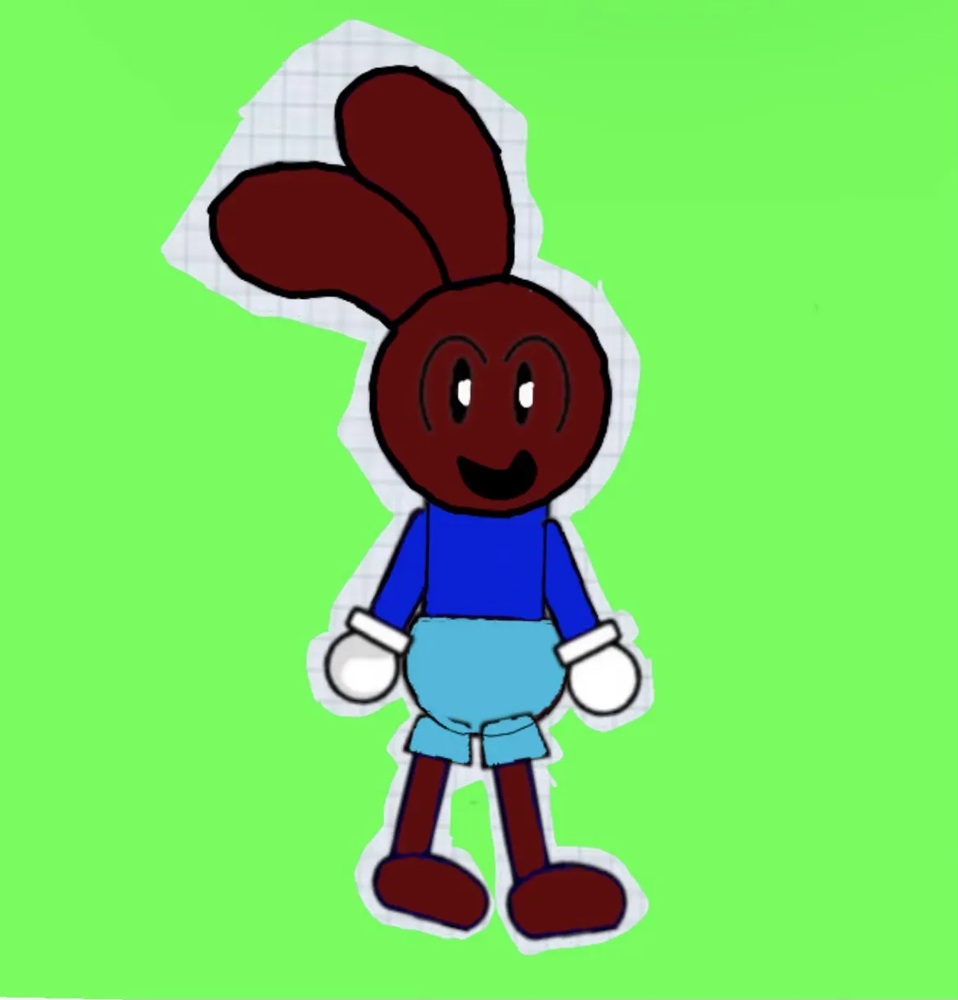
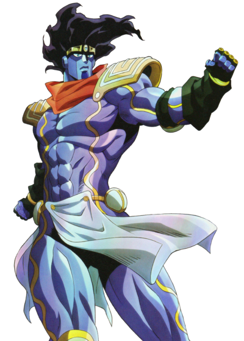
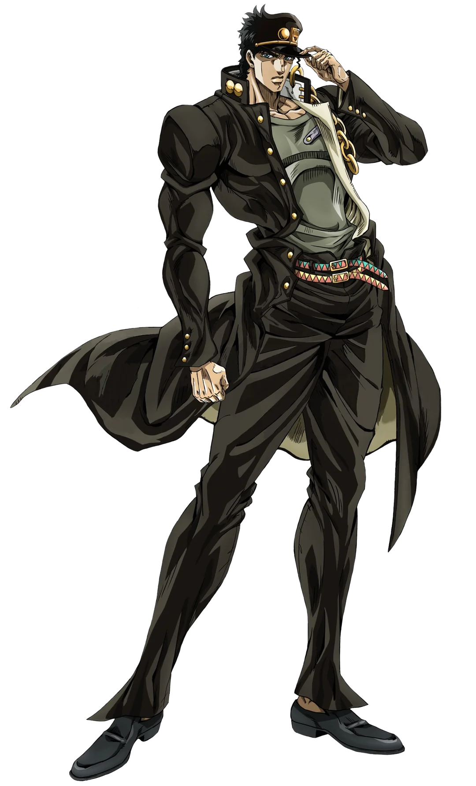

Redder7 started with a simple setup: Redder7 and his floating orb companion, Kevin, go on strange adventures. That setup did not stay simple for long.
The series has grown into an action-comedy involving metallic supervillains, the Underworld, aura battles, Stands, time travel, Dragon Balls, planetary destruction, resurrection, and one very unfortunate character being turned into a radar.
What makes the series work is that it never acts embarrassed by how strange it is. A serious fight can be followed by a joke about the budget. A powerful transformation can become an excuse to replay music constantly. Earth can explode, and the gang's next decision can somehow make the situation worse.
“Redder7 does not hide its chaos. It turns the chaos into the identity of the series.”
Redder7 and Kevin are the heart of the story
Redder7 is the main hero, while Kevin the Orb is his most consistent companion. Kevin is not just a mascot or a sidekick. He travels with Redder7, helps during fights, senses danger, questions bad plans, and stays beside him when the rest of the group is gone.
Their partnership becomes even more important once aura is introduced. Redder7 learns to use aura through training. Kevin later develops an aura of his own, allowing the two of them to combine their power into a synchronized dual aura with a different sound from Redder7's solo transformation.
Boss and Greg complete the main gang. Tinfoil Man kills both of them in Episode 6, leaving Redder7 and Kevin alone for several episodes. They are eventually revived with the Dragon Balls in Episode 13. After returning, Boss and Greg learn aura too, leading to all four members synchronizing their power together.
The metallic villains keep raising the stakes
Tinfoil Man is the aura-obsessed villain of the series. He does not simply power up—he aura farms. He becomes furious whenever Redder7 or his friends survive something that should have defeated them. His biggest early action is killing Boss and Greg, but by Episode 20 he is powerful enough to aura farm in front of the moon and separate the gang across different planets.
Metal Man is more direct. He attacks the heroes, steals important objects, uses magnetism, and interferes with the Dragon Balls. During Episode 20, he uses a Kamehameha against Redder7. The attack weakens Redder7, but Redder7 carefully observes it, possibly setting up a future development.
Aluminum Man is Tinfoil Man's brother, but he is much kinder. He comforts Jimmy, helps a red child, and generally acts like one of the only people who understands basic kindness. Naturally, the story rewards him by turning him into a Dragon Ball radar because Boss thinks it will be useful.
The Oddballs bring crossover chaos
The Oddballs are Jimmy, Jonathan, and Raggie. Raggie introduces the group by explaining that they bomb random places, steal things, and cause destruction for fun. Jimmy is the only member who objects because he does not want innocent people to get hurt.
Jonathan insults Jimmy for speaking up. Aluminum Man comforts him. Then Jimmy discovers Star Platinum and decides that being a pacifist does not mean his Stand cannot pass a fist. He stops time, prevents another bombing, and attacks Jonathan and Raggie.

A pacifist with an extremely powerful loophole.

One of the Oddballs' destructive members.

The cheerful recruiter for random destruction.
The crossover continues when Jimmy and Kevin fall into the Underworld. Jotaro appears, creating a chase and battle involving stopped time, Stand attacks, and a top hat that weighs around 500 pounds. Licensing and budget problems are treated as jokes inside the episode instead of being ignored.

Time stop becomes part of the chaos
Jimmy's discovery of Star Platinum changes him from the group's mistreated pacifist into someone capable of physically stopping the Oddballs whenever they go too far.

How the first twenty episodes grow in scale
The earliest episodes establish Redder7, Kevin, Metal Man, and the Underworld. Episode 4 is deliberately short because of “budget cuts,” while Episode 5 focuses on escaping the Underworld and returning home.
Tinfoil Man arrives and kills Boss and Greg.
A revival box turns out to be a scam, then Metal Man robs the heroes.
The Oddballs, Star Platinum, Jotaro, and the Underworld crossover enter the story.
Redder7 gains aura, abuses its music, and develops dual aura with Kevin.
The Dragon Balls revive Boss and Greg. The Oddballs stay dead because their names were forgotten.
The full gang learns to synchronize aura.
A trip to World War II changes the timeline, destroys Earth, and launches the gang toward Mars.
The Dragon Balls scatter across planets and Aluminum Man becomes a radar.
Tinfoil Man's aura separates the gang across planets before both groups reunite on Mars.
Why the comedy works
The main joke behind Redder7 is escalation. A normal problem almost never stays normal.
- A mall visit becomes a scam and a robbery.
- A resurrection plan becomes a Dragon Ball hunt.
- A time-machine trip destroys Earth.
- A kind character is turned into navigation equipment.
- An aura contest separates people across planets.
The rough production style is also part of the comedy. Budget cuts, music cues, licensing problems, missing sprites, and unusually short episodes are not hidden. They become jokes inside the show.
Redder's Quest turns the series into a game
The world of Redder7 has also been adapted into a browser platformer called Redder's Quest. The original build is a colorful side-scrolling adventure where the player runs through levels, collects coins, jumps across gaps, and stomps enemies.
Redder's Quest: Underworld Descent expands the idea with six darker levels, lava, spikes, flying enemies, shields, double jumping, speed boosts, extra lives, a hidden Ancient Sigil, and a secret stage.
Three worlds are planned
- The Overworld
- The Underworld
- A boss world featuring Tinfoil Man and possibly Metal Man
Future improvements include better visuals, improved sprites, a 3D Redder7 model, checkpoints, music, a world-selection lobby, secret stages, and support for more devices.
Redder7 works because it fully commits to being unpredictable
The series can move from a mall scam to an anime battle, from the Underworld to World War II, and from Earth's destruction to a Dragon Ball search across space.
By Episode 20, it has become an interplanetary action-comedy about resurrection, time travel, Stands, aura, Dragon Balls, metallic villains, and a hero who may be learning new techniques simply by surviving them.
Redder7 and Kevin are still in the middle of everything—and judging by what has happened so far, the next problem will probably be even worse.